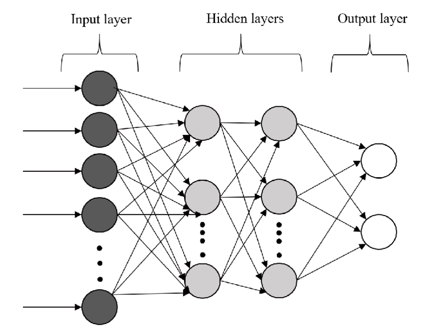

A smooth introduction to Neural Networks
Introduction
Nowadays, deep learning is entering in our lives deeper and deeper (you see what I did there?!? ü§Øü§Øü§Ø) Anyways, as I was saying the evolution of deep learning and the usage of Neural Network has taken an exponential rate. As not everyone is a computer science expert/enthusiast it is obvious that a question may rise.
What is Neural Network and how such a network works?
I am going to create a series of posts, starting with this one, where I will try to answer this very question stated above. Initially, in this post, I will try to present to you a brief introduction on the topic, including the components of a neural network, the steps one need to follow in order to create such a network and of course where this can help us. I will try not to bring on the surface difficult mathematical formulas or nonsense calculations, so hopefully, you will enjoy reading this and will be waiting for the implementations.
Neural Networks - The first touch
In our everyday life, we are meant to complete tasks that require, or not, our effort. As you can guess the effort may differ from task to task. Some of those tasks, you would not think as ones that you put effort to complete and if I was to ask you, you would not even considering to enumerate them. Some, that I have in mind are objects detection or patterns recognition. Consider for example when you try to cross the road and check to your right and left, if any car is passing by or not. This is a task as object detection that you have to complete almost every day and you don't even think about it.
Everyday doings as the one I have just mentioned or any other you could think of, is completed with the help of a system that is placed within our body. Every one of us has a network that helps them take actions and complete tasks. This network is not other than our own biological neural network. This nervous system is built up of many interconnectioned neurons (you may have heard the term "nerve cells"). The nervous system uses the neurons to send messages back and forth from the brain, through the spinal cord, to the nerves throughout the body. As simple as that. Whether you see a car coming then (hopefully) won't pass the road, as you have detected an object (the car). Or imagine you touch a cactus to its spine. At this very moment, the nerves in your finger send a message to your brain that this is not probably good, and this is converted to pain, more or less.
Artificial neural networks (ANN) are inspired by this and attempt to mimic the way that our brain and biological nervous system works. Artificial Neural Networks were firstly introduced by Warren McCulloch and Walter Pitts. They established the computational model in 1943 in their paper called "A Logical Calculus of the Ideas Immanent in Nervous Activity".
In this paper a mathematical model is proposed inspired by our own neural network. A binary neuron model is described, in which each neuron receives input from other neurons and generates an output based on a threshold function. At the end the authors suggested that this simple model could perform logical operations.
Ok, so I believe that now you have a general idea of what is a neural network, and of course many many questions should start popping in your head, I can imagine. Let's continue and I will try to answer them.
So, what does a neural network consists of?
A neural network consists of 3 layers:
- The Input Layer
- The Hidden Layers
- The Output Layer
Let's take them one by one. The input layer is there to welcome all the variables that the scientist would like to use in the model. In our example before the input layer of our biological nervous system is the finger, and the variable incoming is the cactus needle when we touched it (ü´≥üåµüôÖüèΩ), I believe you get the idea here.
Moving forward, the hidden layers refers to the layers between the input and the output layers. The data when passed from the input layer are processed in this part of the model and generate a representation, which is passed to the next layer. The term hidden is given due to the fact that the neuron's activation (that belong in this layers) are not obvious/visible from the input layer or the output of the network and as a result this term is set. This layer allows the model, hence the scientist, to model complex relationships and abstractions of the data, which enables them to create powerful predictions and classification tasks. The numbers of the neurons and the number of the layers can be adjusted according to the needs and the complexity in order to obtain accuracy depending of the obtained data and the goal. The hidden layer for our example would be our brain, where the information imported is processed and valued.
Last but obviously not less important than the rest, is the output layer. Through this layer the outcome of the model is produced based on the information processed by the previous layers (input and hidden). The numbers of the neurons in the output layer depends on the task that the network is designed to perform. For example:
- Binary classification is probably one output neuron that produces the probability expected
- In multi-class classification there is one output neuron per class
For the cactus example of course, as you can guess the output is the pain we feel after the process that took place in our own hidden layers (a.k.a. the brain) imported from our own input layer (our stupid action to touch the cactus, just kidding, I mean our finger).
Neural Networks - The "Magic" behind fancy words
So far so good. I believe that the next obvious question would be:
And how does this work?
Consider the following situation. Imagine the case where you want to buy a house. What are the factors that matter in a house's price? Some that I could think of are
- The neighbourhood
- The available rooms
- The time it was built
- etc
So each of those factors represent a variable, let's assume that neighbourhood is x1, available rooms x2, time it was built x3, and the rest that you can think of. So obviously some are more important than others and play a greater role in our model. As a result, every factor is assigned to a weight (let's say the weight of importance). After a weight is assigned to each factor, we can produce the weighted sum of all those factors. Finally with the help of an activation function, this is converted and output to a number. The output that we search for (hopefully if we have done everything right ü§ûüèº). Bellow, with the help of a graph, those steps are represented in a simple and clear way. I believe till now everything is well understood.

ü§îü§îü§î
Now you may want to say the following :
Ok..?!?.. But what is the activation function?
This is the final touch in our models, to be completed. In order to explain the use of activation functions, I would like you to think of google translate. So what is the way you use google translate?!? You select the language you are going to type in and then the one you want the words to be translated to. So activation function is more or less doing the same thing. After the Weighted sum of the factors is calculated after you end up with a number. Then the activation function is called to translate this number to a solution you are searching for. Imagine this, you are trying to create a neural network to classify a picture that shows a dog. In order to do that you set the following:
- 0 : The picture does not contain a dog
- 1 : The picture contains a dog.
I am not going to get in the details of the network's architecture in this post, but basically, you want to end up to a result based on probabilities.
Just reminding: probabilities are in the set of [0,1]. Probability of 1 means that the event is certainly going to happen, whereas probability of 0 implies that the event is not going to happen, eveeeeeerrrrrrrrrrrrr..... üòõ
So by calculating the sum of weighted factors, you are going to end up with a number that most of the cases do not belong in the [0,1] set. After all, what activation function do is that it translates the result to the desired solution (in our example, a number that belongs to the set [0,1] and tells us with what probability the picture we provided contains a dog). I believe you get why we need it in our game.
More formally, with the use of an activation function we can introduce non-linearity into the network that we build, which gives us the flexibility to create networks to model more complex relationship between inputs and outputs.
There are three types of activation functions Linear, Binary and Non-Linear activation functions. Most common activation functions that are used are :
- The Sigmoid : This function is useful for binary classification problems. It can map any inputs to a value between 0 and 1. üòÆüò≤ Yes, this fits our problem above!
- The Rectified Linear Unit : A more common name is ReLU. This function returns the output only if this is a positive number otherwise it returns 0. Using ReLu can add up computational efficiency to our network
- The Hyperbolic Tangent : Also called Tanh. This is activation function maps any input to a value between -1 and 1. This activation function is mainly used for cyclical or periodic data.
- The Softmax : This is like Sigmoid, but instead of just one class (dog-no dog) it is used to produce a probability distribution amongst classes and find out the most suitable one.
- Speech Recognition
- Image Classification
- Natural Language Processing
- Recommender Systems
- Anomaly Detection
- Amount of data : ANNs require big amount of data which are well prepared and of course labeled, in order to train the network.
- Expensive : In order to train ANN can become a vary expensive procedure. When I say expensive I mean on one hand to obtain well preserved data as well the computational power needed for preparing data and training the network.
- Time Consuming : Artificial neural networks are highly sensitive to the hyperparameters used, such as the learning rate, the number of hidden layers, and the number of neurons in each layer. Which makes it a slow process to find the ones that fit your purpose.
- Overfitting : Artificial Neural Networks can easily overfit data during the training process.
There are more activation functions if you search around though those are the ones used the most. An appropriate activation function choice is a crucial part for the performance of our network.

Neural Network - Uses and limits
Alas! We reached the final part, the exciting one. Artificial Neural Networks is a powerful tool and by getting to know it better and better you can complete resolve complex tasks in wide variety of fields. Some of the most common applications of neural networks are :
Those are only some examples of the range of tasks one can complete with the help of Neural Networks. With the right knowledge and the patience to get the details, ANNs can become the ace up your sleeve.
Of course everything has its own price. This very saying applies to our case as well. Some of the limitations you should consider are
But still, don't let yourself down. Neural Networks is still a very useful and powerful tool. Knowing the limitations, can only be a positive thing as we shall keep in mind what to be cautious about and what to avoid.
That is all I wanted to tell you about Artificial Neural Networks. I hope you got the whole process and learned a thing or two. Stay tuned for some applications on this subject. Thank you for reading this post!
Be safe, code safer!
Subscribe to Kavour
Get the latest posts delivered right to your inbox